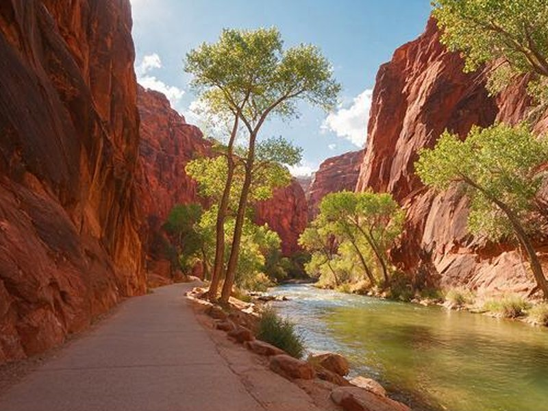

Riverside Walk
- Round trip
- 2.2 mi
- Climb
- about 60 ft
- Effort
- Easy
A paved path along the Virgin River that ends where The Narrows begins. It suits any fitness level, and the canyon walls give shade on hot afternoons. In busy months you reach it by shuttle.